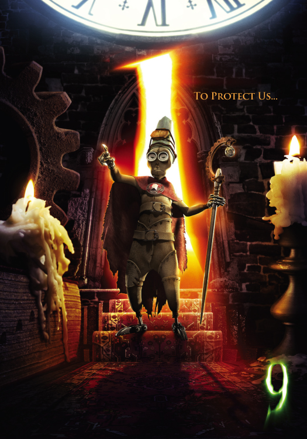
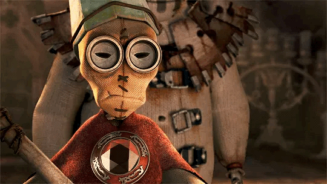

1 is the grouchy, self-proclaimed leader of the group. He is cunning and rarely indecisive (unlike me).
Despite his strong leadership, he tends to opt for "safer" options for the group.
He butts heads with 9 constantly. In the fandom, 1 is referred to as the Pope Doll because of his epic pope-like hat and other decorations.
Because he was created first, he is the oldest member of the group and has the most rudimentary design.
1 is pretty great. He's got a really cool character design.
His eyes are super unique and has an oddly human face shape compared to the others.
